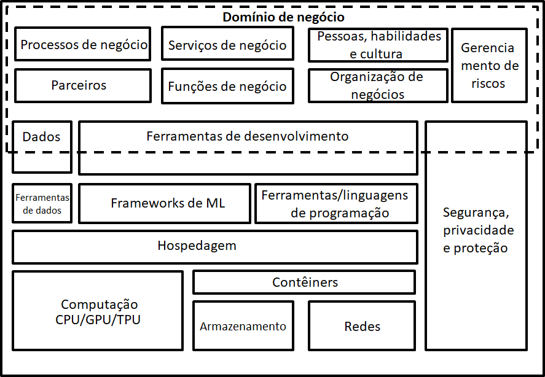

Arquitetura é um campo minado. E criar uma boa arquitetura para sistemas e aplicações de aprendizado
de máquina é uma estrada não pavimentada. Arquitetura não é, por definição, alto nível e, às vezes,
detalhes relevantes são de extrema importância. Porém, obter detalhes sobre o funcionamento interno
no nível de implementação de algoritmos de aprendizado de máquina pode ser muito complicado.
Portanto, uma referência para arquitetura de aprendizado de máquina deve te ajudar de diversas
maneiras.
Discussões sobre o que é uma boa arquitetura pode ser uso sem sentido de tempo. Mas, contribuições
para esta arquitetura de referência são sempre bem vindas para a tornar mais útil para diferentes
domínios e diferentes indústrias.
Os princípios chave que são usados para a arquitetura de referência de aprendizado de máquina são:
- Os aspectos mais importantes de aprendizado de máquina devem ser abordados.
- Os aspectos de qualidade: segurança, privacidade e proteção exigem atenção específica.
- A arquitetura de referência deve abordar todos os elementos básicos de arquitetura, desde
desenvolvimento a hospedagem e manutenção.
- A tradução dos elementos básicos da arquitetura para os elementos básicos de uma solução de
código livre e aberto de aprendizado de máquina deve ser facilmente possível.
- A arquitetura de referência de aprendizado de máquina independe de alguma tecnologia. O foco
está em delinear os blocos de construção da arquitetura conceitual que fazem uma arquitetura de
aprendizado de máquina.
Escrevendo-se esses princípios, será mais fácil orientar as discussões sobre essa arquitetura de
referência e melhorar essa arquitetura de aprendizado de máquina.
Princípios de arquitetura de aprendizado de máquina são usados para traduzir alternativas
selecionadas em idéias básicas, padrões e diretrizes para simplificar e organizar a construção,
operação e evolução de sistemas.
Preocupações importantes para esta arquitetura de referência de aprendizado de máquina são as
seguintes:
- Aspectos de negócio (por exemplo, aptidões, processos, aspectos legais, gestão de riscos)
- Aspectos de negócio (por exemplo, aptidões, processos, aspectos legais, gestão de riscos)
- Aplicativos de aprendizado de máquina e estruturas necessárias (por exemplo, tipo de algoritmo,
facilidade de uso)
- Hospedagem (por exemplo, computação, armazenamento, requisitos de rede, soluções de contêiner)
- Aspectos de segurança, privacidade e proteção
- Manutenção (por exemplo, registro, controle de versão, implantação, agendamento)
- Escalabilidade, flexibilidade e desempenho

Quando você começa a usar o aprendizado de máquina para aplicativos reais, é recomendável considerar
as seguintes perguntas antes de começar a criar sua arquitetura de solução:
- Você só quer experimentar e testar alguns modelos de aprendizado de máquina?
- Você quer experimentar diferentes estruturas e bibliotecas de aprendizado de máquina para
descobrir o que funciona melhor no seu caso de uso? Os sistemas de aprendizado de máquina nunca
funcionam diretamente. Você precisará repetir, retrabalhar e começar tudo de novo. Se chama:
inovação!
- Performance é crucial para a sua aplicação?
- As vidas humanas são direta ou indiretamente dependentes de seu sistema de aprendizado de
máquina?